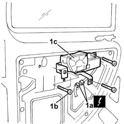
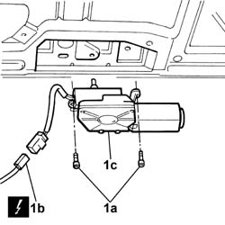

5050C42 rear wiper motor - r+r
- Path
- Procedures > 50 AUXILIARY UNITS > 5050 SCREEN WASHERS AND HEADLAMP WASH/WIPE > 5050C rear wash/wipe > 5050C42 rear wiper motor - r+r
- Kind
- repair procedure (removal / refitting; the operation number is the code)
- Applies to
- all engines; all production periods
- Interactive page
- https://sloeber94.github.io/elrnDB-fDbl/en/#/2584869
Applies to: all engines; all production periods
 Removing
Removing
 Refitting
RefittingDisconnect the battery negative terminal.
Applies to: all engines; all production periods; only with equipment: Cargo trim level
Op. 7020E34 REAR DOOR FLAP INTERIOR PANEL - R+R
1. Disconnect the electrical connector (1a), undo the bolts (1b) and remove the rear windscreen wiper motor (1c).
Name | Connector | |
|---|---|---|
1a | Rear window wiper motor |

Applies to: all engines; all production periods; only with equipment: Doblò trim level
Op. 7015A04 TAILGATE INTERIOR PANEL - R+R
1. Undo the bolts (1a), disconnect the electrical connector (1b) and remove the rear wiper motor (1c).
 | Name | Connector |
|---|---|---|
1b | Rear window wiper motor |

Applies to: all engines; all production periods
Refitting
RemovingPlace the windscreen wiper motor in position and secure it using the bolts.
Connect the electrical connector.
| Name | Connector |
|---|---|---|
- | Rear window wiper motor |
Applies to: all engines; all production periods; only with equipment: Cargo trim level
Applies to: all engines; all production periods; only with equipment: Doblò trim level
Applies to: all engines; all production periods; only with equipment: Doblò trim level
Op. 5050C34 REAR WIPER ARM WITH BLADE - R+R
Connect the battery negative terminal.
Check that the rear windscreen wiper is working properly.
Topics linked from this page (4)
- 5050C34 rear wiper arm with blade - r+r
- 7015A04 tailgate interior panel - r+r
- 7020E34 rear door flap interior panel - r+r
- N016 REAR WINDOW WIPER MOTOR